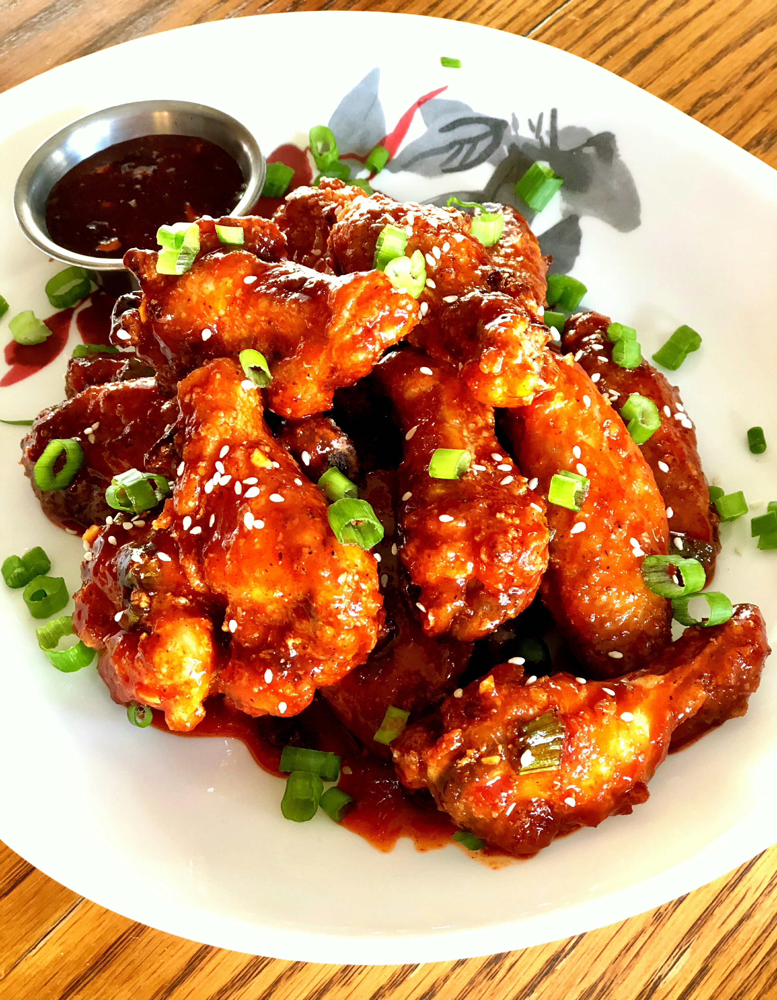

These Korean-style air-fried wings are crispy, sticky and spicy. Cooked in an air fryer they are ready in less than 30 minutes. They are perfect as an appetizer or add some rice and veggies on the side and you have a balanced meal.